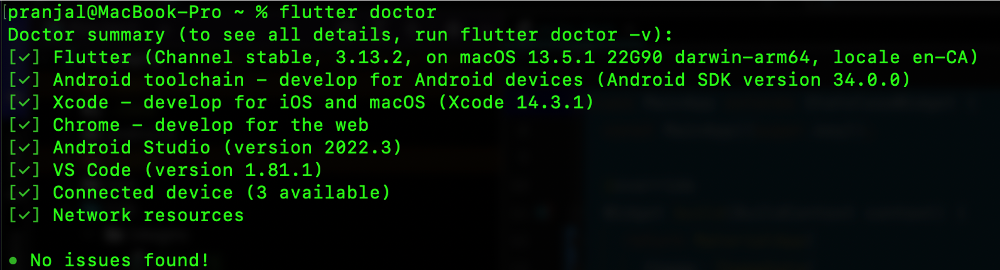

Get Started with Flutter
Install Flutter SDK
This part guides you through the installation process of Flutter on your computer. You'll download the Flutter SDK and update the $PATH variable to include the flutter/bin directory. Follow the guide created for your OS.
Install an editor
In this section, you'll learn how to set up a code editor for Flutter development. Popular choices include VS Code and Android Studio. I will be using Android Studio in class and if like to follow along, I suggest the same IDE.
Run flutter doctor
You should get something like this after you install everything.
Output will look different based if you are on Windows or Linux, but you should have atleast one simulator working (andoroid or iOS) and also Chrome should work

Test Drive
This part helps you get hands-on experience by walking you through creating, running, and modifying a simple Flutter app.
Create the app
Here, you'll create a new Flutter project using the command line or your chosen editor's interface.
Run the app
This step shows you how to run your Flutter app on a physical device or an emulator.
Hot reload
Learn about Flutter's hot reload feature, which allows you to see changes instantly without rebuilding the entire app.
Run on multiple platforms
Run your app in a variety of platforms such as:
- iOS simulator
- Android simulator
- Windows
- MacOS
- Linux
- Chrome/Edge
- You can also try running on a physical device